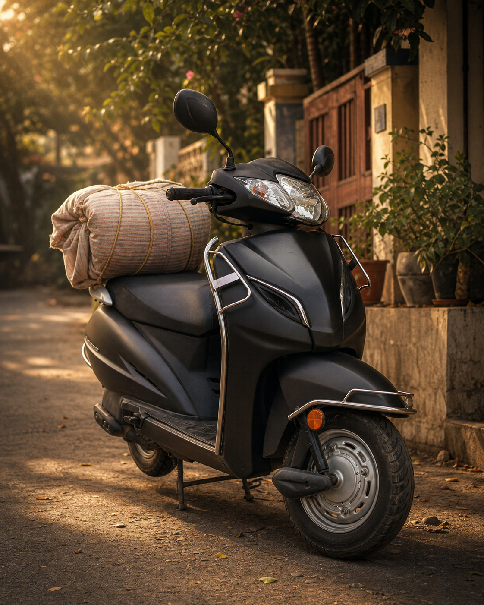
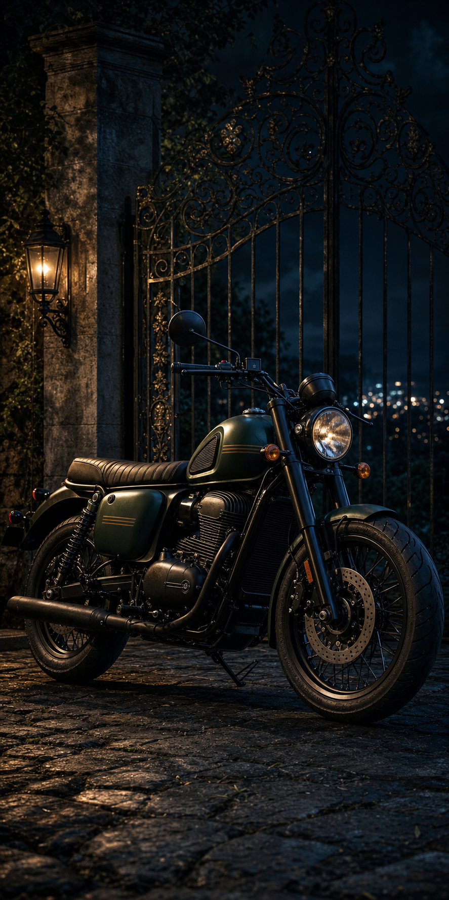
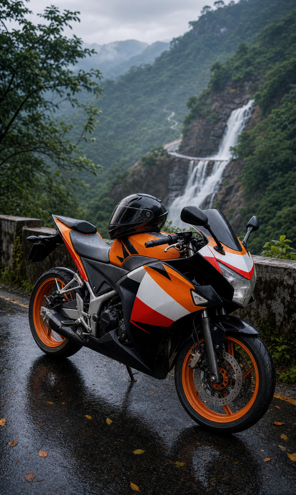
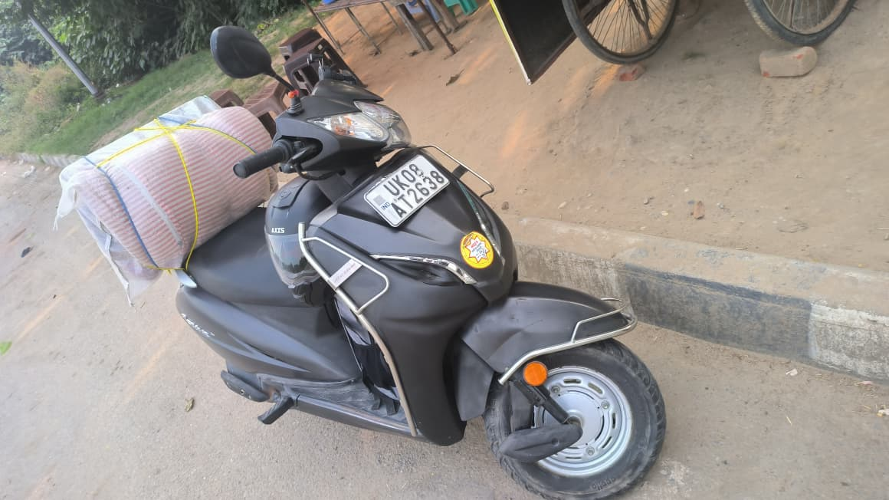
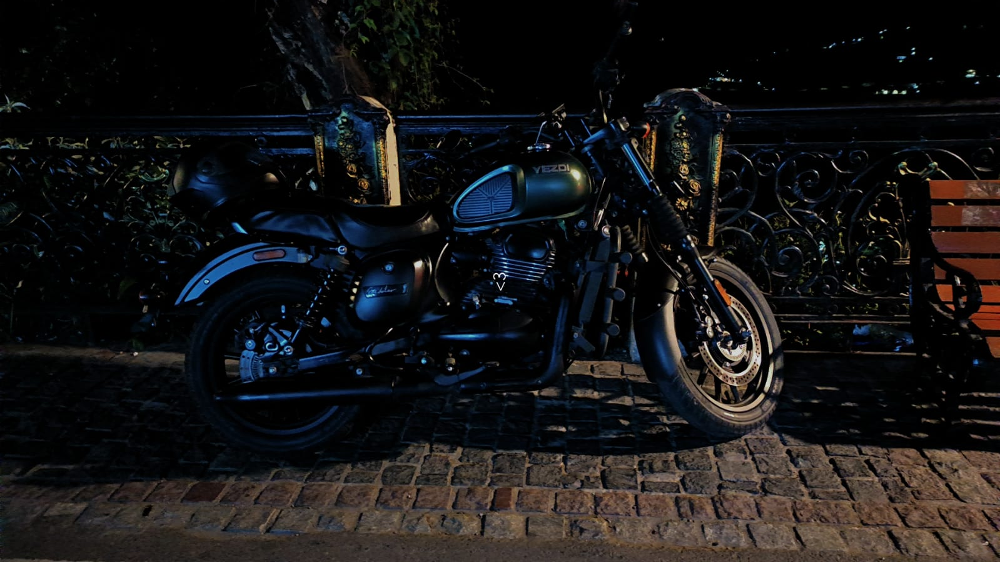
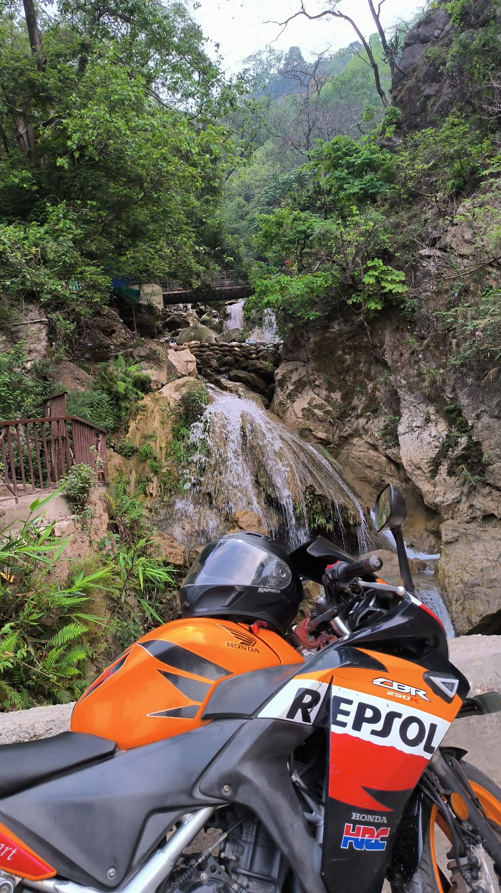
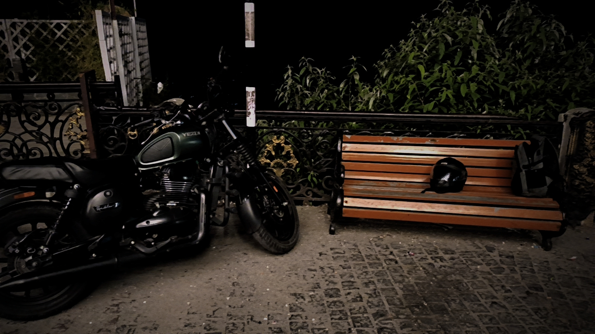
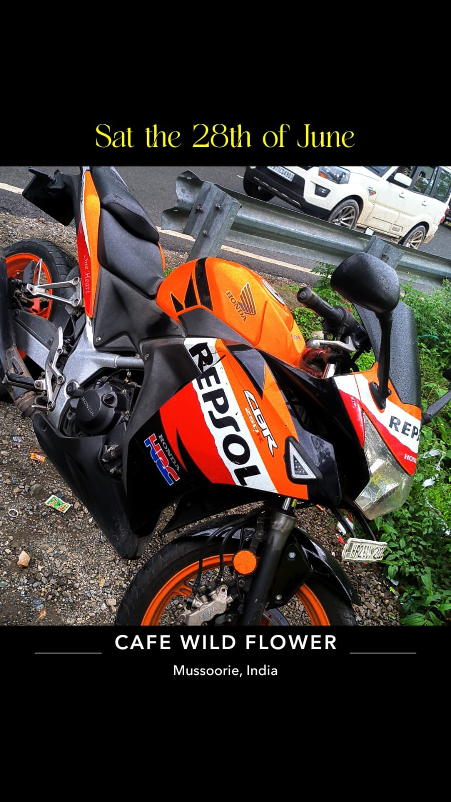
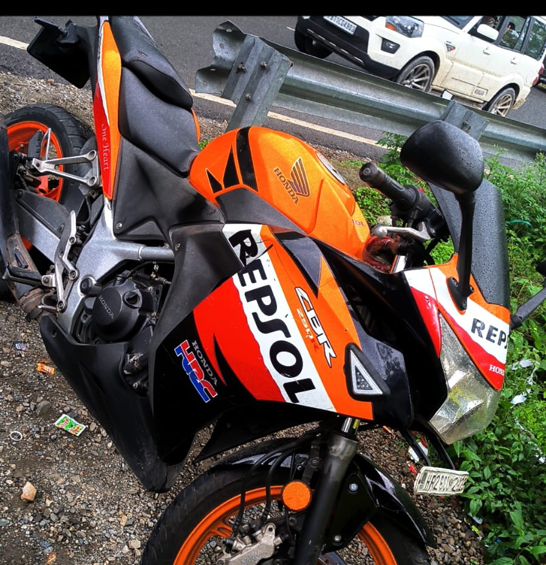

A small tribute
Not just machines. Milestones with wheels.
This page keeps the good things close: the Activa's dependable daily courage, the Yezdi's dark-road personality, and the CBR 250R Repsol's final act of protection. It is simple on purpose. The memories do the heavy lifting.
Timeline
The road, in four dates.
Activa begins the journey
The first daily partner, the one that made riding normal, useful, and mine.
Yezdi Roadster joins
Bought second hand for Rs 1,20,000. Dark, proud, and already carrying stories.
CBR 250R Repsol arrives
Bought for Rs 28,000 from pocket money. A dream that felt earned.
The last picture with her
A final memory before the accident. She was lost, but she helped save a life.
Ride activities
Little scenes from my road life.
Pick a memory mode and the mini road changes with it. A small moving dashboard for the jobs, night loops, hill stops, and quiet thankfulness.
Activa mode
Daily run, no drama.
The Activa activity is simple: start, carry, wait, return. It is the everyday machine that made riding feel normal and mine.
41,000 km remembered
Steady mood
3D memory garage
Three silhouettes, one road.
A small animated scene built from simple 3D shapes: scooter, roadster, sport bike. Tap a name to bring each one forward.
The 3D scene could not load here, but the tribute is still ready below.
The three
What each one gave.
Activa / 2018 to now
The First Teacher
The Activa is the quiet legend: errands, school runs, family work, early confidence, and 41,000 km of just showing up. It is not loud. It never needed to be.
- Role
- First ride, daily backbone
- Known distance
- 41,000 km and still present
- 109.51 cc Honda Activa110 family
- 9.05 Nm at 5500 rpm
- Automatic CVT character
- 5.3 L fuel tank

Yezdi Roadster / 18 Oct 2023
The Night Roadster
Bought second hand for Rs 1,20,000, then turned into something personal across 20,000 km. The Roadster has that old-school calm: heavy presence, round headlamp, and a mood that looks best after sunset.
- Bought
- 18 October 2023
- Known distance
- 20,000 km ridden by me
- 334 cc liquid cooled single cylinder
- 21.46 kW at 7500 rpm
- 29.63 Nm at 6000 rpm
- 6-speed gearbox, 12.5 L tank

CBR 250R Repsol / 19 Dec 2023 to 27 Jun 2025
The Guardian
The CBR was bought for only Rs 28,000, from pocket money, and somehow became priceless. She was a dream bike, a waterfall-photo bike, a memory bike, and in the accident, she gave one final protection.
- Bought
- 19 December 2023
- Last picture
- 27 June 2025
- 249.6 cc liquid cooled single cylinder
- About 26.5 PS at 8500 rpm
- 22.9 Nm at 7000 rpm
- 6-speed manual, 13 L tank

Original photos
The real ones.
These are the photos that anchor the page. The AI images are only atmosphere; these are the proof.






My quiet thanks
For the CBR that became a shield.
Some vehicles leave by being sold. Some leave by being retired. Mine left after doing something no machine should ever have to do: taking the hit, holding the line, and helping me come back alive.
She deserves to be remembered whole, bright, orange, stubborn, beautiful, and loved.